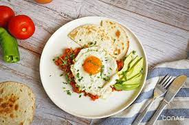
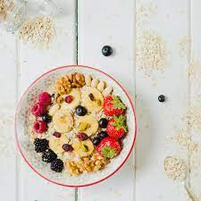
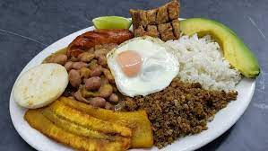
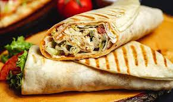
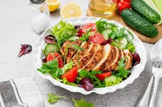
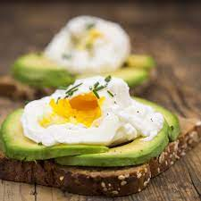
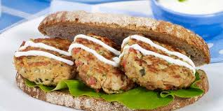
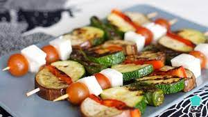
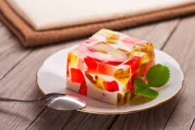

| Imagen |
Descripcion |
Precio |
|
Este desayuno no solo es colorido y visualmente atractivo, sino que también es una manera equilibrada de comenzar el día, ofreciendo una buena mezcla de proteínas, grasas saludables, fibra, y vitaminas. La combinación de sabores dulces de las frutas con el sabor más terroso y salado del huevo crea una experiencia gustativa muy agradable. |
$40.00 |
|  |
Los huevos estrellados con aguacate no solo son una elección saludable por su balance de proteínas, grasas saludables, y vitaminas, sino también una experiencia culinaria que satisface los sentidos, ideal para comenzar el día con energía y satisfacción. Este plato habla el lenguaje de la simplicidad elegante, donde cada ingrediente brilla por sí mismo, pero juntos crean una obra maestra. |
$30.00 |
 |
Los waffles con frambuesa y mora son un deleite matutino que combina la textura dorada y crujiente de los waffles recién hechos con la dulzura ácida de las frambuesas y moras frescas. Coronados con un ligero espolvoreo de azúcar glas y un hilillo de miel o sirope de arce, este plato no solo es un festín para el paladar, sino también un espectáculo visual de colores vibrantes que promete comenzar el día con alegría y satisfacción. |
$28.00 |
 |
El pan tostado con mantequilla, huevo y tocino es un clásico desayuno reconfortante que equilibra la simplicidad con el sabor intenso. La base del plato consiste en rebanadas de pan, tostadas a la perfección hasta alcanzar una textura crujiente por fuera, pero manteniendo su suavidad por dentro, y luego untadas generosamente con mantequilla derretida que se filtra en los poros calientes del pan. |
$20.00 |
|
Los panqueques con frambuesa y moras son una tentadora opción de desayuno que mezcla la suavidad esponjosa de los panqueques recién hechos con la jugosa frescura de las frambuesas y moras. Cada panqueque, dorado a la perfección, sirve de lienzo para las vibrantes bayas, cuya acidez sutil equilibra la dulzura de la masa. |
$22.00 |
|  |
Una ensalada de frutas es un plato refrescante y colorido que celebra la diversidad y riqueza de sabores que ofrece la naturaleza. Compuesta por una selección cuidadosa de frutas frescas, cortadas en trozos jugosos que varían en texturas y dulzura, esta ensalada es un verdadero arcoíris de colores vibrantes. |
$20.00 |
| Imagen |
Descripcion |
Precio |
|  |
Este almuerzo, balanceado y completo, no solo satisface el hambre sino que deleita los sentidos, ofreciendo una experiencia gastronómica que es tan reconfortante como nutritiva. La combinación de arroz, carne molida, plátano frito, frijoles, aguacate, y huevo estrellado es un testimonio de la rica tradición culinaria latinoamericana, un plato que habla de la generosidad de la tierra y la calidez del hogar. |
$45.00 |
|  |
Los burritos con carne y lechuga son una deliciosa opción de comida que combina sabores reconfortantes y frescos en cada bocado. Comenzando con una tortilla de harina suave y flexible, se extiende una capa generosa de carne sazonada y cocida a la perfección. La carne, ya sea de res, pollo, cerdo o incluso opciones vegetarianas como tofu o frijoles, ofrece un sabor rico y sustancioso que se mezcla armoniosamente con los demás ingredientes. |
$40.00 |
|  |
La pechuga de pollo, sazonada con hierbas aromáticas y especias, se cocina a la perfección, logrando una jugosidad y terneza que resaltan su sabor natural. Su exterior dorado y crujiente crea un contraste delicioso con la suavidad de su interior, ofreciendo una experiencia gastronómica gratificante con cada bocado.Acompañando a la pechuga de pollo, una colorida selección de verduras frescas se presenta en todo su esplendor. |
$60.00 |
|  |
Este desayuno es una combinación equilibrada de proteínas, grasas saludables y carbohidratos complejos que proporciona energía duradera y satisfacción. Además, es una opción versátil que se adapta a diferentes preferencias dietéticas y puede personalizarse con ingredientes adicionales como tomates, espinacas o queso, según el gusto individual. |
$28.00 |
 |
En resumen, este plato de frijoles refritos con totopos, carne frita, huevos, tocino y chilaquiles es una combinación deliciosa y reconfortante de sabores y texturas que deleitará a cualquier amante de la comida mexicana. |
$48.00 |
|  |
La torta rellena de tortitas de atún y lechuga es un bocado reconfortante que combina la suavidad del pan con la frescura del atún y la lechuga. En cada mordisco, se disfruta la jugosidad del atún sazonado y las crujientes hojas de lechuga, todo envuelto en la calidez del pan. Es una opción deliciosa y satisfactoria para una comida rápida o un almuerzo ligero. |
$43.00 |
| Imagen |
Descripcion |
Precio |
|
El aperitivo de salmón es una delicia elegante que combina la suavidad y el sabor ahumado del salmón con una variedad de acompañamientos frescos y sabrosos. Cada bocado ofrece una explosión de sabor, con la jugosidad del salmón complementada por ingredientes como pepino fresco, queso crema, eneldo y limón, creando una experiencia gastronómica refinada y deliciosa. |
$65.00 |
|
El aperitivo de pan rebanado con camarón encima es una exquisitez sencilla y sofisticada. Cada rebanada de pan crujiente sirve como base para los camarones frescos y jugosos, que se destacan con su sabor marino y textura tierna. Este aperitivo se completa con una pizca de limón, hierbas frescas como perejil o eneldo, y posiblemente una salsa de acompañamiento, ofreciendo una combinación de sabores frescos y deliciosos. |
$55.00 |
|  |
Las brochetas de queso fresco, tomate cherry y calabacita asada son una explosión de sabores frescos y deliciosos en cada bocado. Cada brocheta presenta cubos suaves de queso fresco que se complementan con la dulzura jugosa de los tomates cherry y la suavidad ahumada de las calabacitas asadas. La combinación de ingredientes se equilibra perfectamente, creando un aperitivo vibrante y lleno de texturas. |
$68.00 |
|
Las flautas, rellenas de carne sazonada y crujientes por fuera, se presentan en una cama de salsa verde con aguacate, acompañadas de crema fresca y queso rallado. Cada bocado ofrece una explosión de sabores mexicanos, con la suavidad del aguacate complementando la intensidad de la salsa verde. La crema fresca y el queso rallado añaden una cremosidad y un toque de salinidad que completan esta deliciosa experiencia culinaria. Es un plato reconfortante y lleno de sabor que satisfará los antojos de cualquier amante de la cocina mexicana. |
$57.00 |
|
La ensalada de camarones con verduras al vapor y pasta es una combinación refrescante y satisfactoria de mariscos, vegetales y carbohidratos. Los camarones, jugosos y delicadamente cocidos, se mezclan con verduras al vapor, como brócoli y zanahorias, que aportan frescura y color al plato. Todo se une con pasta al dente, que añade una textura reconfortante y complementa los sabores del marisco y las verduras. |
$64.00 |
 |
La milanesa empanizada de pollo es una delicia crujiente y tierna que se complementa perfectamente con una ensalada fresca de verduras. La milanesa, con su exterior dorado y crujiente, revela un interior jugoso y lleno de sabor de pollo tierno. La ensalada, compuesta por una variedad de verduras frescas y crujientes, añade un toque de frescura y color al plato, creando un equilibrio entre lo crujiente y lo refrescante. |
$68.00 |
| Imagen |
Descripcion |
Precio |
 |
El pastel de maracuyá es una delicia tropical que combina la frescura y acidez característica de la fruta de la pasión con una textura suave y ligeramente gelatinosa. Cada bocado ofrece un estallido de sabor refrescante y exótico que evoca los cálidos días de verano. El pastel, con su tono amarillo brillante y su sabor distintivo, es una opción deliciosa para cualquier ocasión, especialmente para aquellos que disfrutan de sabores tropicales y refrescantes. |
$52.00 |
|
La tarta de fresa con crema batida es un clásico postre que combina la frescura y dulzura de las fresas con la suavidad y ligereza de la crema batida. La base de masa quebrada o galleta crujiente sostiene un relleno cremoso y dulce de fresas frescas o compota de fresas. Encima, se coloca una capa generosa de crema batida, que agrega un toque de frescura y decadencia al postre. |
$48.00 |
|
El cheesecake de frambuesa y moras es una exquisita combinación de suave y cremoso queso crema con la frescura y acidez de las frambuesas y moras. La base de galleta crujiente sostiene un relleno sedoso de queso crema, decorado con una capa de salsa de frambuesa y moras, que añade un toque de color y sabor vibrante al postre. |
$45.00 |
|
Los macarons son pequeños y delicados bocados de repostería francesa, formados por dos galletas de almendra, ligeramente crujientes por fuera y suaves por dentro, unidas por un relleno cremoso. Estas galletas vienen en una variedad de colores y sabores, desde clásicos como vainilla y chocolate hasta opciones más exóticas como lavanda o pistacho. |
$48.00 |
|  |
El mosaico de gelatina es un postre colorido y divertido que consiste en capas de gelatina de diferentes colores y sabores, dispuestas en un patrón vibrante y llamativo. Cada capa está hecha con gelatina aromatizada y coloreada, que se solidifica para crear una textura suave y elástica. Al cortar el mosaico, se revelan las distintas capas, creando un efecto visualmente impresionante. |
$32.00 |
|
El mousse de chocolate con crema batida es un postre decadente y cremoso que combina la intensidad del chocolate con la ligereza de la crema batida. El mousse, suave y sedoso, se elabora con chocolate derretido y claras de huevo batidas, lo que le confiere una textura aireada y suave. Se sirve adornado con una capa de crema batida, que aporta un toque de frescura y suavidad. |
$41.00 |
| Imagen |
Descripcion |
Precio |
|
Refrescos de diferentes sabores:
Ponche: Refresco de sabor a frutas tropicales, con un toque dulce y refrescante.
Coca Cola: Refresco de sabor único, con un equilibrio entre dulce y ácido, con notas de vainilla y caramelo.
Naranja: Refresco con un intenso sabor a naranja, refrescante y cítrico.
Sprite: Refresco de limón-lima, con un sabor fresco y burbujeante, con toques cítricos y ligeramente ácidos. |
$20.00 c/u |
|
Limonada de agua mineral: Refrescante bebida elaborada con limón exprimido, agua mineral y azúcar, ofreciendo un sabor cítrico, refrescante y ligero, perfecto para calmar la sed en días calurosos. |
$21.00 |
|
Aguas frescas:
Toronja: Refrescante bebida elaborada con jugo de toronja fresca, agua y azúcar, con un sabor cítrico y ligeramente amargo que ofrece una sensación refrescante y revitalizante.
Limón: Deliciosa bebida elaborada con jugo de limón fresco, agua y azúcar, ofreciendo un sabor refrescante y ligeramente ácido, perfecto para calmar la sed en días calurosos.
Horchata: Refrescante bebida de origen latinoamericano, elaborada con leche de almendra, arroz, canela y azúcar, con un sabor dulce y especiado que ofrece una experiencia refrescante y reconfortante. |
$25.00 |
|
Piña Colada: Deliciosa bebida tropical elaborada con jugo de piña, crema de coco y ron, ofreciendo un sabor dulce, cremoso y exótico con notas tropicales que evocan el verano y la playa.
Bebida de cereza con leche de coco: Refrescante bebida elaborada con jugo de cereza, leche de coco y un toque de azúcar, ofreciendo un sabor suave, cremoso y ligeramente dulce, con la combinación perfecta entre la frescura de la fruta y la cremosidad de la leche de coco. |
$28.00 c/u |
|
Jugos naturales:
Jugo de naranja: Refrescante y lleno de vitamina C, el jugo de naranja es conocido por su sabor dulce y cítrico que despierta los sentidos y proporciona una dosis de energía natural.
Jugo de toronja: Con un sabor ligeramente ácido y refrescante, el jugo de toronja es una excelente opción para despertar el paladar y proporcionar una sensación de frescura.
Jugo de betabel: Este jugo ofrece un sabor único y terroso, con un ligero toque dulce. Es conocido por ser rico en antioxidantes y nutrientes que promueven la salud.
Jugos verdes: Elaborados con una mezcla de verduras de hojas verdes como espinacas, kale o apio, junto con frutas como manzana o piña, los jugos verdes son refrescantes, revitalizantes y llenos de nutrientes, ofreciendo una forma deliciosa de obtener vitaminas y minerales esenciales para el cuerpo. |
$30.00 c/u |
|
Rainbow Paradise es una exquisita bebida tropical que combina una variedad de sabores y colores vibrantes. Esta bebida refrescante está compuesta por una mezcla de jugos de frutas tropicales como piña, mango, papaya y maracuyá, creando una explosión de sabores dulces y ácidos en cada sorbo. Con su llamativa paleta de colores que recuerda a un arcoíris, Rainbow Paradise es una opción refrescante y deliciosa. |
$35.00 |